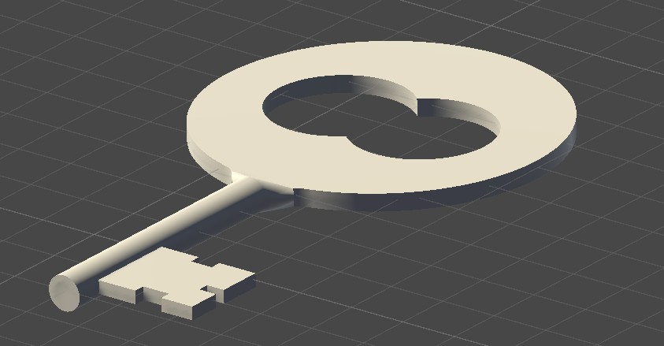

Procedural Minions Animation
This was my final assignment for KIT307 (Computer Graphics and Animation: Principles and Programming). The project brief was to create a procedural 3D animation, though the subject-matter was left to my discretion (naturally, I chose minions, because why not...). Everything in the animation is generated procedurally, including meshes, animations, camera movements, texture mapping, and mesh skinning. Aside from the texture on the castle (which I created myself) and other solid textures, the animation does not use any imported assets; it's all code (thousands of lines of it!).
I say more about how this works below.
A brief note to UTAS students: KIT307 is a seriously awesome unit. Completing this unit has drastically improved my ability to manage complexity, and has noticeably made me a better programmer. In particular, the unit improved the rate at which I am able to produce code, as well as my ability to keep-track of complex code; lots of my other projects now seem trivial in comparison. Even though it's not directly relevant to my career aspirations, I believe that KIT307 is currently the most important unit in the BICT (or, at least, one thereof). If you're a technical student, you simply can't miss this unit (especially if you have a background or affinity for maths).
Here's the full animation:
How it Works!
Procedural mesh generation is an incredibly interesting (and complicated) topic. In computer graphics, a mesh is merely two arrays: an array of vertices, and an 'index' array specifying how the vertices should be connected to one-another. The vertex array is a collection of length-3 vectors, and the index array is a flat 1D array relating the indices of the vertex array to mesh triangles. For example, if the index array is \([0,1,2,3,1,0]\), then this the mesh will have two triangles formed by the the 3D points indexed by \(\{0, 1, 2\}\) and \(\{3,1,0\}\). (In practice, meshes will have thousands of triangles.) Procedural mesh generation therefore boils down to generating the vertex and index arrays procedurally.
A major part of this project was programming the characters' skinning animations. Skinning refers to a mesh deformation technique where a character's mesh is organically deformed to follow an internal skeleton. In my implementation, each mesh vertex could be associated with a maximum of three bones, and for each associated bone, a 'bone weight' stipulated the extent to which the vertex should be transformed by each bone (where the sum of the bone weights for a vertex was 1.0). Once implemented, I found that the single-threaded skinning calculations took too long to execute, so I used the Unity Jobs system to parallelise these calculations.
I'd love to say more about the project and dive into some of the technical components, but I fear that doing so could constitute an academic integrity violation😢.
Another KIT307 Assignment
This parameterised procedurally-generated key was produced for another KIT307 assignment. There was a little more to the assignment, however this was my favourite part due to the sheer challenge and complexity. We were given a picture of a key (referred to as the 'Ye Olde Key'), and instructed to write code to procedurally generate a mesh matching this picture, with adjustable parameters for physical attributes. This was perhaps my favourite assignment from my degree.
I would like to note that I did not use LLMs for this assignment (they were allowed, but I opted to problem-solve everything myself). There's nothing more satisfying then persevering through a challenge!
